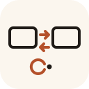

LAN Share
LAN Share envoie des fichiers d'un appareil à un autre, uniquement sur votre réseau local. Pas d'internet, pas de compte, pas de clé USB.
À quoi ça sert
Vous avez un fichier sur votre ordinateur et il doit arriver sur le portable d'un collègue, sur le téléphone de la famille ou sur une autre machine de la maison ou du bureau. LAN Share le fait en quelques clics, et vérifie que le fichier arrive intact.
Fonctionnalités
- Détection automatique des appareils connectés au même réseau.
- Envoi de fichiers avec une barre de progression.
- Vérification de chaque fichier par son empreinte SHA-256.
- Accès protégé par une clé réseau : seuls vos appareils se voient.
- Interface identique sur Windows et Linux, avec le journal des transferts.
Installation
Windows
- Téléchargez l'installateur depuis le site.
- Lancez-le et suivez les étapes. Une présentation de l'entreprise et de l'aide s'affiche pendant l'installation.
- Ouvrez LAN Share depuis le bureau ou le menu Démarrer.
Linux (Ubuntu, Debian et dérivés)
Ouvrez un terminal et copiez la commande indiquée sur la page de téléchargement. Elle télécharge le paquet puis l'installe. Vous pouvez ensuite lancer LAN Share depuis le menu des applications.
Premier usage
- Au premier lancement, saisissez la clé réseau. Choisissez une phrase que vous connaissez, et utilisez exactement la même sur tous vos appareils.
- Les autres appareils qui ont la même clé apparaissent dans la liste « Machines sur le réseau ».
- Pour envoyer : choisissez l'appareil, puis le fichier, puis cliquez sur Envoyer.
- Les fichiers reçus arrivent automatiquement dans votre dossier de réception (par défaut le dossier
LANSharede votre dossier personnel). Vous pouvez le changer dans le menu Fichier.
Sur téléphone
Lancez LAN Share sur un ordinateur du réseau, puis ouvrez l'adresse affichée dans le navigateur du téléphone, connecté au même Wi-Fi. Saisissez la clé réseau pour accéder aux appareils.
Édition Démo et édition Pro
| Édition | Taille maximale par fichier |
|---|---|
| Démo | 50 Mo |
| Pro | Sans limite |
Si un appareil n'apparaît pas
- Vérifiez que les deux appareils sont sur le même réseau Wi-Fi, et que la clé réseau est identique.
- Autorisez LAN Share dans le pare-feu de Windows pour les réseaux privés.
- Sur Linux, vérifiez que les ports
47800(UDP) et47801(TCP) ne sont pas bloqués. - Les réseaux d'invités et les Wi-Fi publics isolent souvent les appareils : LAN Share ne peut pas les relier dans ce cas.